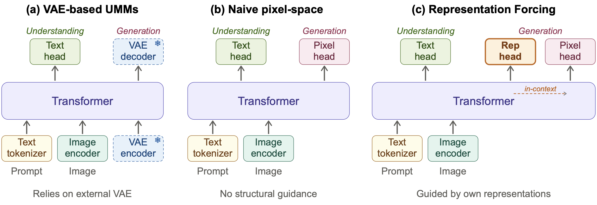
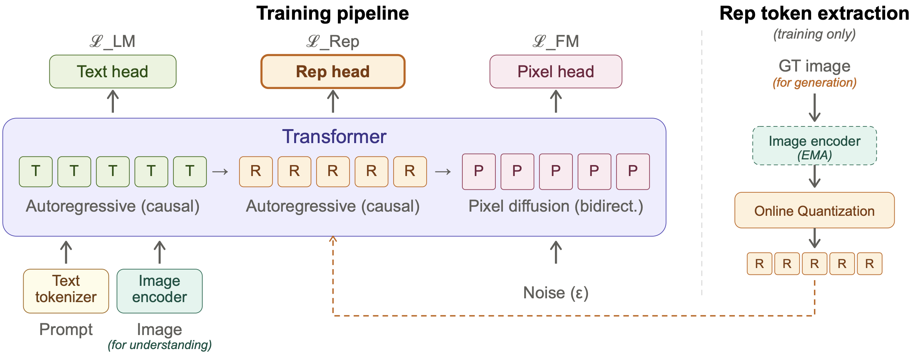
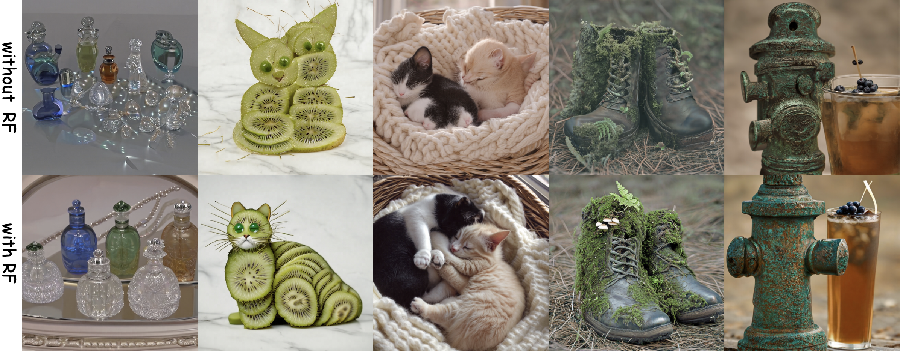

Text-to-image generation results at 1024 × 1024 resolution from our pixel-space unified model with Representation Forcing.
What lies between language and pixels?
Representation.
We propose to ground visual representation in the decoder of a unified model. The decoder learns to predict it from text, just as the encoder reads it from images. Understanding and generation then meet in a single representation space, learned end to end, with no frozen VAE in between.
We call this Representation Forcing: the encoder's representations force the decoder to learn the same visual structure, and the decoder's predictions, in turn, force the pixels to follow it.
Text-to-image generation results at 1024 × 1024 resolution from our pixel-space unified model with Representation Forcing.
Unified multimodal models (UMMs) aim to handle perception and generation in a single model. Yet existing UMMs still rely on a frozen, separately pretrained VAE for image generation, imposing a structural bottleneck. Naively removing it introduces a quality gap, as the model must learn both high-level structure and low-level details from raw pixels.
In this paper, we propose Representation Forcing (RF), a technique that closes this gap by making representation prediction a native capability of the model. Concretely, RF forces the decoder to autoregressively predict visual representations as intermediate tokens before pixels; these tokens then stay in context to guide pixel diffusion within the same backbone. By turning representations from perception outputs into generation targets, RF eliminates the need for any external generative latent space.
We find that RF benefits both understanding and generation. On image generation, our pixel-space model with RF matches state-of-the-art VAE-based unified models. On image understanding, pixel-space RF generally outperforms its VAE-based variant. Together, these results offer an effective step toward end-to-end, bottleneck-free UMMs.

(a) Prevailing UMMs rely on a frozen VAE encoder and decoder for image generation, creating a structural bottleneck. (b) Naively removing the VAE and generating directly in pixel space eliminates this bottleneck but loses structural guidance, leading to a quality gap. (c) Representation Forcing closes this gap by training the decoder to autoregressively predict visual representations (Rep head) before pixel generation. These representations match features from the model's own understanding encoder and remain in context within the shared transformer, providing structural guidance for pixel-space diffusion without any external latent space.

Left: The decoder processes a unified sequence of text tokens (T), representation tokens (R), and pixel patches (P) within a shared transformer. Text and representation tokens are predicted autoregressively under next-token prediction (ℒLM and ℒRep), while pixel patches are generated via bidirectional diffusion from noise (ℒFM). The image encoder provides continuous visual features to the transformer for understanding tasks. Right: For generation training, an EMA copy of the image encoder extracts features from the ground-truth image, which are discretized via online quantization into representation tokens. These tokens provide both training targets for ℒRep and teacher-forcing inputs at R positions. At inference, the right panel is bypassed entirely: the decoder predicts representation tokens from the text prompt alone, and these tokens guide pixel-space diffusion.
On GenEval and DPG-Bench, our pixel-space model with RF (RF-Pixel) matches state-of-the-art VAE-based unified multimodal models — without any separately pretrained generative module.
| Model | GenEval | DPG | ||||||
|---|---|---|---|---|---|---|---|---|
| Single Obj. | Two Obj. | Counting | Colors | Position | Color Attri. | Overall↑ | Overall↑ | |
| Generation Only | ||||||||
| PixArt-α | 0.98 | 0.50 | 0.44 | 0.80 | 0.08 | 0.07 | 0.48 | 71.11 |
| SDv2.1 | 0.98 | 0.51 | 0.44 | 0.85 | 0.07 | 0.17 | 0.50 | 68.09 |
| DALL-E 2 | 0.94 | 0.66 | 0.49 | 0.77 | 0.10 | 0.19 | 0.52 | – |
| SDXL | 0.98 | 0.74 | 0.39 | 0.85 | 0.15 | 0.23 | 0.55 | 74.65 |
| DALL-E 3 | 0.96 | 0.87 | 0.47 | 0.83 | 0.43 | 0.45 | 0.67 | 83.50 |
| SD3-Medium | 0.99 | 0.94 | 0.72 | 0.89 | 0.33 | 0.60 | 0.74 | 84.08 |
| FLUX.1-dev† | 0.98 | 0.93 | 0.75 | 0.93 | 0.68 | 0.65 | 0.82 | 84.00 |
| Seedream 3.0 | 0.99 | 0.96 | 0.91 | 0.93 | 0.47 | 0.80 | 0.84 | 88.27 |
| Z-Image-Turbo | 1.00 | 0.95 | 0.77 | 0.89 | 0.65 | 0.68 | 0.82 | 84.86 |
| Qwen-Image | 0.99 | 0.92 | 0.89 | 0.88 | 0.76 | 0.77 | 0.87 | 88.32 |
| Unified Models | ||||||||
| Chameleon | – | – | – | – | – | – | 0.39 | – |
| LWM | 0.93 | 0.41 | 0.46 | 0.79 | 0.09 | 0.15 | 0.47 | – |
| SEED-X | 0.97 | 0.58 | 0.26 | 0.80 | 0.19 | 0.14 | 0.49 | – |
| TokenFlow-XL | 0.95 | 0.60 | 0.41 | 0.81 | 0.16 | 0.24 | 0.55 | 73.38 |
| ILLUME | 0.99 | 0.86 | 0.45 | 0.71 | 0.39 | 0.28 | 0.61 | – |
| Janus | 0.97 | 0.68 | 0.30 | 0.84 | 0.46 | 0.42 | 0.61 | – |
| Transfusion | – | – | – | – | – | – | 0.63 | – |
| Emu3† | 0.99 | 0.81 | 0.42 | 0.80 | 0.49 | 0.45 | 0.66 | 81.60 |
| Show-o | 0.98 | 0.80 | 0.66 | 0.84 | 0.31 | 0.50 | 0.68 | – |
| Show-o2 | 1.00 | 0.87 | 0.58 | 0.92 | 0.52 | 0.62 | 0.76 | 86.14 |
| Janus-Pro-7B | 0.99 | 0.89 | 0.59 | 0.90 | 0.79 | 0.66 | 0.80 | 84.19 |
| MetaQuery-XL† | – | – | – | – | – | – | 0.80 | 82.05 |
| BLIP3-o | – | – | – | – | – | – | 0.84 | 81.60 |
| UniWorld-V1† | 0.98 | 0.93 | 0.81 | 0.89 | 0.74 | 0.71 | 0.84 | 81.38 |
| OmniGen2† | 0.99 | 0.96 | 0.74 | 0.98 | 0.71 | 0.75 | 0.86 | 83.57 |
| BAGEL | 0.99 | 0.94 | 0.81 | 0.88 | 0.64 | 0.63 | 0.82 | 85.07 |
| BAGEL† | 0.98 | 0.95 | 0.84 | 0.95 | 0.78 | 0.77 | 0.88 | – |
| RF-Pixel (ours) | 0.99 | 0.93 | 0.84 | 0.89 | 0.74 | 0.66 | 0.84 | 84.15 |
| RF-Pixel (ours)† | 0.98 | 0.95 | 0.88 | 0.87 | 0.92 | 0.70 | 0.88 | – |
† with LLM rewriter.
Two takeaways: (i) RF consistently improves general visual understanding under both generation pathways; (ii) Pixel+RF outperforms VAE+RF on most benchmarks — removing the external VAE lets understanding and generation share a single representation space more tightly, indicating pixel-space generation is more compatible with unified multimodal modeling.
| Method | General Visual Understanding | Document & Diagram | ||||||
|---|---|---|---|---|---|---|---|---|
| MMMU | HalluBench | MME* | BLINK | RealWorldQA | AI2D | DocVQA | ChartQA | |
| VLM-only | 56.2 | 65.0 | 79.7 | 56.2 | 65.8 | 90.3 | 89.3 | 86.0 |
| VAE | 51.0 | 55.7 | 71.3 | 52.2 | 65.2 | 90.7 | 90.0 | 78.8 |
| VAE + RF | 49.6 −1.4 | 61.3 +5.6 | 79.3 +8.0 | 52.9 +0.7 | 66.6 +1.4 | 87.8 −2.9 | 88.3 −1.7 | 80.5 +1.7 |
| Pixel | 49.9 | 63.7 | 76.6 | 49.4 | 63.1 | 85.8 | 90.0 | 81.7 |
| Pixel + RF | 54.2 +4.3 | 64.8 +1.1 | 80.2 +3.6 | 53.0 +3.6 | 65.8 +2.7 | 90.3 +4.5 | 88.0 −2.0 | 81.3 −0.4 |
MME* reports average accuracy across all perception and cognition questions. Deltas are vs. the corresponding non-RF baseline.

Qualitative comparison of pixel-space generation with and without RF. Without RF, the model produces images with poor structure — distorted object shapes and incoherent compositions. With RF, the model generates more coherent structures by first predicting high-level visual representations before pixel rendering. Quantitatively, RF lifts pixel-space GenEval from 0.25 to 0.76, matching the VAE-based counterpart at 0.77.
@article{wang2026representation,
title={Representation Forcing for Bottleneck-Free Unified Multimodal Models},
author={Wang, Yuqing and Lin, Zhijie and Yang, Ceyuan and Zhao, Yang and Xiao, Fei and He, Hao and Zhao, Qi and Ding, Zihan and Wang, Fuyun and Wang, Shuai and Zhang, Youliang and Fan, Haoqi and Liu, Xihui},
journal={arXiv preprint arXiv:2604.21921},
year={2026}
}